演出資訊
| 屆別 | 第 20 屆 |
|---|---|
| 年度 | 2004（民國 93 年） |
| 主題 | 《迴響．回想》｜慶祝嘉義高中80週年校慶 |
| 日期 | 2004.07.15 - 2004.07.18 |
| 場地 | 彰化高中雨賢館演奏廳／台南縣立文化中心音樂廳／嘉義市文化中心音樂廳 三場巡迴演出 |
| 指揮 | 顏崇勝（指揮） |
| 獨奏／協奏 | 吳昭男（長笛／Concertino for Flute Op.107） |
| 場次 | 3 場（詳見下方場次資訊） |
SESSION 1
彰化場
SESSION 2
台南場
SESSION 3
嘉義場
演出的話
嘉義高中管樂隊歷史悠久，幾乎是與嘉義高中一同成長與茁壯。七十三年來，樂隊的學生完成了無數次的表演活動及各種勤務，近年來，更由於政府的大力推廣，及各項管樂節慶活動的實行，使得嘉中樂隊得以有更多發展的空間，而樂隊也漸漸地提昇水準，邁向專業化及制度化，成為雲嘉地區數一數二的管樂隊。
音樂可以帶給人們心靈上的喜樂與平安，透過曼妙的音符，洗滌了生活中的煩悶與憂傷，使人類的生活更加祥和，心靈也更加平靜。樂隊七十三年來帶給嘉義高中無數的音樂饗宴及豐富的精神生活，當然我們也希望這樣美好的音樂能夠回饋給社會。今年是嘉義高中走入八十週年歷史的一個里程碑，樂隊舉辦校友聯合音樂會也進入第二十週年，今年除了在熟悉的嘉義場地演出之外，我們也在彰化高中及新營文化中心各辦了一場音樂會，這是樂隊第一次的巡迴演出，一方面是慶祝學校及樂隊走向新的里程碑，另一方面也希望我們的音樂可以走出嘉義，讓其他地方的人也可以聽到我們用心演奏的音樂。每年的校友聯合音樂會都會有許多校友積極主動的參與，今年更是有校友組成了「校友後援會」，不但給在校生許多幫助，也重溫了他們以前在學校生活以及在樂隊練習的快樂時光，而校友聯合音樂會更代表著嘉義高中樂隊七十三年來的縮影，除了帶給社會更豐富的精神生活，更傳承著嘉義高中「質實剛健」的精神。
願這場音樂會，能夠帶給您一些感動！
嘉義高中校長 何經
2004年7月
嘉義高中管樂隊簡介
嘉義高中管樂隊成立於民國二十年，七十三年來培育了無數的音樂人才。自民國六十五年台灣區音樂比賽高中職組比賽優等之後，迭有佳績、得獎無數。
2001年三月更受日本濱松市國際管樂節邀請赴日，參與活動演出；此外，本隊在校生也常受邀出席各項活動演出，且每次皆能圓滿達成、廣受好評，實為本團隊員們不斷努力所得到的成果。
嘉義高中管樂隊的同學們，平日忙於功課、承擔升學的壓力外，在參與樂隊的過程中接受嚴格的要求。學長制度的運作下，學長們學習著如何愛護、指導、管理學弟妹，學弟妹們學習如何尊敬、服從學長；行政管理方面，由於學校方面的充分授權，制度的建立、修正與貫徹，樂隊幹部的職權分配與事務推動，甚至龐大的開支經費，皆由同學們自行統籌辦理；音樂方面則由指導老師從基本教材的選擇、音樂會的規劃、演奏曲目的合奏指導無不竭盡心力仔細教導，祈使同學們在音樂素養上能夠獲得助益，並在生活中能有正當的活動提供調劑和紓解。如此，期許嘉義高中管樂隊的各位同學們藉由參加樂隊，在做人處世與品行修養上皆有足堪傲人的典範。
自民國七十四年起，每年暑假舉辦校友暨在校生聯合演奏會，一來聯絡感情、二來校友們將個人在各大專院校樂團所吸收的演奏技巧，利用暑假返回母校，指導學弟妹們並參加校友聯合演奏會的演出，使得本隊隊員之演奏技巧有長足的進步。本隊隊員特別犧牲假期來參加集訓，為的是以音樂來回饋社會，使愛好音樂的朋友們能有高尚正當的休閒活動。
當然還有其他各界的菁英，如行政院長、主任醫師、新聞記者、廣播節目製作人、職業歌手、法界人士等，顯示嘉義高中管樂隊校友團多年持續不墜的的素質與水準。
我們用管樂刻寫歷史，我們用管樂璀璨青春，我們用管樂豐富生命；把「演奏好的音樂、並將音樂演好」作為努力的起點與終點，顯然這是一段漫長的道路。
心靈手記
靜靜地聽，我的心呀，聽那世界的低語，這是它對你求愛的表示呀。
Listen, my heart, to the whispers of the world with which it makes love to you.
水裡的游魚是沉默的，陸地上的獸類是喧鬧的，空中的飛鳥是歌唱著的。但是，人類卻兼有海裡的沉默，地上的喧鬧與空中的音樂。
The fish in the water is silent, the animal on the earth is noisy, the bird in the air is singing. But Man has in him the silence of the sea, the noise of the earth and the music of the air.
瞬刻的喧聲，譏笑著永恆的音樂。
The noise of the moment scoffs at the music of the Eternal.
指揮與獨奏
曲目介紹
上半場
- 佛羅倫斯人進行曲 Florentiner MarchJulius Fucik／Arr. by M. L. Lake
樂曲首先以小號領奏，奏出後起拍的動機，隨後銜接長笛與短笛旋律，連續兩次之後進入第一段主題。主題是以十六分音符與八分音符構成的簡單而熱鬧非凡的旋律線，以木管為主要樂器，銅管為次要樂器，樂句結構單純，第二段主題由強烈低音銅管接手，木管則為節奏與和聲，展現出銅管的氣魄。中段主題顯現出與第一及第二主題截然不同的曲趣，音樂進入全曲最富旋律感的樂段，此時上低音號與木管聯合吹奏旋律，旋律以相當規律的四分音符與二分音符構成穩定的線條，為即將再現的第一主題預留力度與張力的空間。最後在兩小節的「極漸慢」之後，第三段以不同的速度變化再次反覆，並隨著速度的加快以及音樂織度的豐富變化，音樂進入最後高潮，結束在兩個強烈的十六分音符。（顏崇勝）
- 神曲 The Divine ComedyRobert W. Smith
這組管樂曲是以但丁的名著“神曲”為底本所寫成的，在原著中，神曲共分為地獄、煉獄及天堂三個部分，敘述著作者在這三界中旅行的經過，故事的內容在描寫作者自身迷失於一座黑暗的森林中，他想跑出森林，跑上那象徵道德的光輝中的山丘，可是卻遇到很多的阻礙，在惶恐中，有一位詩人前來將他救出，且領他去遊地獄、煉獄和天堂。而在改編成管樂曲的時候，又在煉獄跟天堂之間加了一首“昇天”，是描寫從煉獄到天堂的過渡地帶，這四首曲子中用了很多樂器的獨奏及打擊特殊的音色來做效果，其中更有好幾段用人聲唱的聖詠旋律，為曲子添加了更多豐富的色彩。
I 地獄：地獄用雙簧管的獨奏拉開序幕，在定音鼓的氣氛助長下，地獄之門終於打開，法國號的旋律正象徵著地獄中慘不忍睹的各種酷刑，給人一種陰森的感覺，接著銅管一連串的點音，似乎宣告著什麼冤屈，為整首曲子添加了緊張的氣氛，沉寂之後，出現了鐵鍊的聲音，地獄中的靈魂正在接受審判，此時強而有力的銅管聲出現，又回到一開始的景象，在定音鼓精采的過門中劃下句點。
II 煉獄：地獄承接在地獄之後，煉獄裡住的只是一些犯小過錯的人，刑罰較不慘重，整曲用法國號當主軸，也有高音薩克管和長笛的獨奏，製造懸疑的氣氛，雖然還是有鐵鍊的束縛，但已不像地獄般沉重，除了呻吟聲外，也可以聽到祈禱式的歌唱，在低音鼓的襯托下，銅管的旋律顯的堅定，而木管的快速音符就像是煉獄中的岩漿，暗中波濤洶湧，在喧鬧之後又恢復寂靜，由高音薩克管緩緩唱出尾奏。
III 昇天：相較於在地獄及煉獄中的灰暗，這首曲子充滿了祥和的感覺，一開始小號溫柔的吹出旋律，象徵受到了天神的指示及淨化，在木管快速音符的帶領下，仰視著太陽，準備前往天堂，在美妙的長笛及聖詠合唱的伴隨下，彷彿獲得了昇華，小號用響亮的高音帶領著其他銅管，奏出莊嚴的旋律，在強烈的音響中，以極高速飛向天堂，到達了聖地。
IV 天堂：天堂一開始清脆的鐵琴搭配著美妙的風鈴聲，營造出一片安詳，有天使降臨的感覺。從地獄的殘酷走到天堂的莊嚴肅穆，在這首曲子中特別用了很多明亮的和聲，除了讓聲音聽起來飽滿，也讓人聽起來有耳目一新的感覺，擺脫了之前的灰暗與沉重，這首曲子聽起來沒有前幾首的緊張與困難，但每個音符都需要用心的感受及體會。我們用心演奏了這首組曲，希望能帶給您一些感動。（王聖安、林建碩）
- D大調長笛小協奏曲 作品107 Concertino for Flute Op.107Cecile Chaminade／Arr. by Clayton Wilson／獨奏：吳昭男
長笛此首小協奏曲乃是出自於法國作曲家C. Chaminade之手，在長笛的曲子中算是一首常被演奏的曲子，旋律十分好聽，耳熟能詳。一開始即由一段中板且富有感情的旋律為此曲拉開序幕，樂隊在後以豐富的和聲作為伴奏，中間部分漸漸由抒情的樂句轉變成生動、輕快的樂段，原本厚重的樂團和聲也逐漸隨著獨奏者而活潑起來，接著是一段裝飾奏（Cadenza），此時樂團完全停止，是獨奏者最能表現自己特色的部分，在演奏者精湛的演出之後，樂團又隨即跟出，回到一開始的主題，轉為更輕快、快速的樂句，最後華麗的結束此曲。（吳昭男）
下半場
- 消失的加勒比人 Caribbean HideawayJames Barnes
這是一首極富色彩、韻律及節奏的曲子，在這首曲子中打擊樂器佔了很重要的地位，像響板、牛鈴、沙鈴⋯等，營造出熱鬧非凡的感覺，雖然整曲只有三分多鐘，但是卻富有多樣的變化，木管活潑的音符快速的跳動著，時而輕快，時而悠揚，最後幾個漸弱消失的音符，不但富有神秘感，也給人一種餘音繞樑的感覺，值得細細品味。（王聖安）
- 賽爾特民謠組曲 Suite on Celtic Folk SongsTomohiro Tatebe
這首組曲是三首古愛爾蘭的民謠所組成的，中世紀時，賽爾特族人征服了歐洲的土地，並移居到北邊的愛爾蘭，與當地的原住民文化融合，產生了新的文化，而這首曲子就是文化融合之後所產生的。第一個曲子“March”一開始就由小鼓的重拍領導整曲，節奏鮮明，再來是銅管樂器強而有力的低音，給人一種剛正不阿的感覺。第二首“Air”是一首旋律優美且充滿鄉愁的曲子，原本是由提琴類樂器及愛爾蘭傳統的樂器－風笛來演奏，但經過改編之後，由短笛的獨奏及法國號溫柔的音色來呈現。第三首“Reel”是一首典型的快板愛爾蘭舞曲，從頭到尾都維持著輕快的步伐，在激烈的舞步下搭配著豎笛不和諧的高音做出大膽的結尾。（王聖安）
- 鐵達尼 TitanicJames Horner／Takashi Hoshide
這部電影在幾年前可說是家喻戶曉，這次我們選擇吹的這個版本，將帶領大家重溫電影的每個動人情節。一開始由法國號奏出柔美的旋律，導出整個故事的開端，輕快的旋律緊接在後，描述著鐵達尼初航的熱鬧及搭乘的民眾興高采烈的神情，在愉快的出航後不久，曲風一轉，加入了沉重的撞擊聲，形容看到冰山的危急情況，其中穿插著一句變調的旋律，似乎預警著什麼不祥的事將要發生，在惶恐不安的心情中，終於船還是沉了，隨即接出的是一段哀弔式的悲痛旋律，最後是大家最耳熟能詳的鐵達尼主題曲，溫柔中也帶著些許的不捨與遺憾，這段旋律、這個故事，將會一直留在你我的心中。（王聖安）
- 依帕內瑪姑娘 The Girl form IpanemaA. C. Jobim & V. De Moraes／Arr. by Naohiro Iwai
這首曲子是日本作曲家所寫的，依帕內瑪是一個熱鬧的海邊，作曲者用輕鬆的風格描寫海邊女孩撩人的姿態，整曲充滿了拉丁風味慵懶的感覺，不像恰恰或搖滾樂中使用了強烈的重音，此曲想呈現的是溫柔及舒服的氣氛，長笛及薩克管即興的獨奏顯的輕快明亮，而其他樂器沉穩的節奏在後面襯托著，形成鮮明的對比，仔細聆聽，不難想像出在蔚藍的海邊渡假的感覺喔！（王聖安）
- 日本風情畫五 Japanese Graphity VArr. by Atsuhiro Isozaki
自昭和三十四年起（1959），日本開始一系列的「日本歌謠唱歌大賽」，當時這項比賽被定位為「促進日本歌謠的發展與進步」。在昭和四十、五十年代，這個比賽也達到最顛峰。這一首由磯崎敦博（Atsuhiro Isozaki）編曲的日本風情畫五便是集昭和五十年代那些比賽中的著名歌曲而成。此曲一開始就是薩克管優美的旋律，接著轉為銅管，從這些耳熟能詳的旋律中，也可以感受到樂團節奏上的默契，因此我們特地將這首富有親和力的曲子放在最後，希望能引起大家熱烈的共鳴喔！（顏崇勝、王聖安）
演出成員
| 聲部／角色 | 人員 |
|---|---|
| 指揮 | 顏崇勝 |
| 長笛 | 8811 吳昭男、9001 許景斌、9011 吳承洺、9102 張育嘉、9211 郭晉維 |
| 雙簧管 | 8912 黃耀瑩 |
| 低音管 | 8711 劉怡汝、8714 孫潤庭 |
| 豎笛 | 7222 李吉峰、8121 涂靖育、張馨勻、8901 黃信又、8922 陳正龍、9101 謝介豪、吳治先、9122 吳瑩娟、9123 陳佩君、9221 蕭宇成、王景銘 |
| 薩克管 | 7931 陳達章、8431 鄭鈞元、8732 陳鈺涵、8832 陳韋志、8931 楊舜斌、9131 許竣榮、9132 陳韋希 |
| 法國號 | 8802 劉議謙、8841 魏仕杰、8941 洪伯欣、9041 張世明、吳翰萬、9241 阮怡嘉 |
| 小號 | 8101 陳明陽、8351 陳奕享、楊宗臻、8601 古峻錡、8651 劉全盛、8952 王嘉欣、9202 蔡淳任 |
| 長號 | 7901 高健雄、曾芮欣、8261 范國恩、8301 高崇文、何宗穎、8861 簡晟軒、8961 鄭嘉緯、8962 蔡秉璋、9161 王聖安、9261 方崇任 |
| 上低音號 | 8671 吳仁庭、8971 莊勝雄、8982 王騰寬 |
| 低音號 | 7581 翁啓榮、7981 黃智豐、8501 丁肇賢、9201 廖時賢 |
| 打擊 | 8392 馬郡隆、8691 黃忠琦、8692 詹舒閔、8991 陳英杰、8994 黃楷澍、9191 唐懿成、9192 蕭彥廷 |
| 鋼琴 | 9161 王聖安 |
| 豎琴 | 9122 吳瑩娟 |
演出成員姓名依節目冊原文呈現；校友編號經校友名錄比對後，僅為姓名唯一吻合者加註。節目冊作「翁啓榮」，並於同冊校友捐款名單明列編號 7581，故以原姓名字形加註該編號。
主辦、協辦與演出單位
| 職務 | 人員 |
|---|---|
| 主辦單位 | 國立嘉義高級中學、國立彰化高級中學 |
| 協辦單位 | 台南縣立文化中心、嘉義市文化局、嘉義市管樂團 |
| 演出單位 | 國立嘉義高中校友暨在校生聯合管樂團、國立彰化高中管樂社（彰化場次聯合演出） |
感謝下列贊助單位
李鐘林、陳守道、戴政岳、郭汶修、林居翰、殷銘良、邱建發、咕咕雞、大帥鍋、尋衣園、吉圃園、理想牙醫、阿嫂簡餐、經典名床、聖心藥局、廣元藥局、邱胃腸科、華生診所、奇美冰品、崇中投注站、鐘易晉診所、松韻企業社、故鄉牛排館、學明影印店、王正旭醫師、邱碩堯醫師、張文輝醫師、林永祥老師、玉味麵包店、正宗蔘藥行、種杏蔘藥行、莊小寬數學、儒林補習班、黃曜春律師、趙善楷先生、順發鐵板行、嘉邑城隍廟、優格牙醫診所、佑群牙醫診所、安麗牙醫診所、JUST個性商品、運成中醫診所、上純泡沫紅茶、嘉義光正萬教宮、嘉義高中校友會、嘉義高中家長會、中埔鄉光正萬教殿、天主教聖馬爾定醫院
特別感謝校友捐款
6401馮朝君、6801游宗仁、7502陳志鳴、7503蔡文立、7581翁啓榮、7593王全福、7654林明峰、7951楊順欽、7971方捷立、7981黃智豐、8101陳明陽
感謝的話
今晚的音樂會對我們來說有很大的意義，不只是將我們幾個月來辛苦的成果呈現給大家，也讓我們在樂隊的日子有更多美好的回憶，如今我們即將升上三年級，或許能再來樂隊練樂器的時間不多，但這場音樂會卻為我們的社團生活畫下美好的句點。在籌備音樂會的過程中，我們經歷了很多一般高中生無法體驗的事情：頂著大太陽跑遍大街小巷的募款、貼海報，規劃整個音樂會的練習時間及演出過程，這一切的經驗都給了我們一個很好的學習機會。這一路上，很感謝顏崇勝老師給我們音樂方面的指導，也作為我們與學校溝通的橋樑。也感謝許多畢業的校友學長學姐們，雖然平時學長、姐都忙於自己的工作，但只要一聽到樂隊要辦音樂會，大家總是不遺餘力的幫忙，給了我們莫大的鼓勵。最要感謝的，是那些捐款贊助我們的人，也許素未謀面，也許他們對樂隊沒有很深的了解，但我們去募款時，他們的慷慨解囊，無疑是為我們打了一劑強心針。沒有他們，這場音樂會或許無法這麼完美的呈現在大家面前，這一路上的辛苦及汗水，在今夜都將化為一顆顆音符，願這些美妙的音符能感動今晚的每一個你。
管樂社91級全體敬上
節目冊
原始節目冊共 16 張掃描檔；可左右滑動瀏覽，點開圖片後可用左右鍵切換頁面。
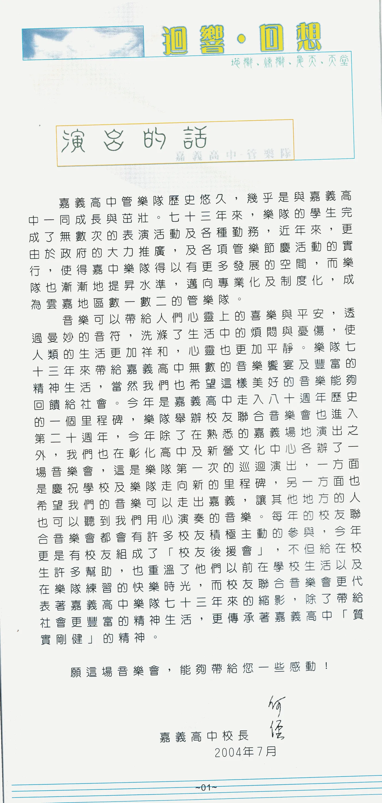
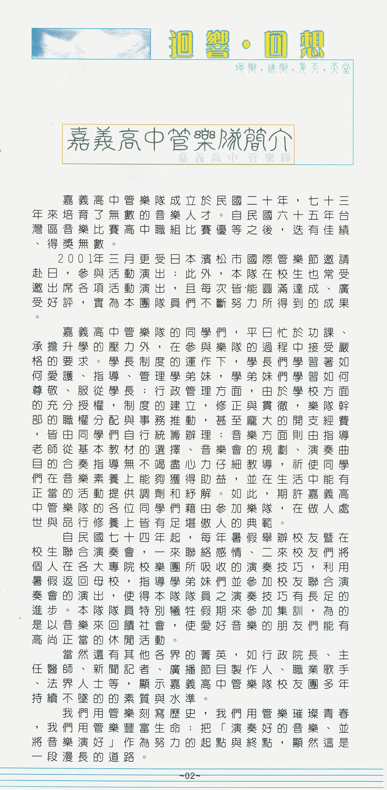
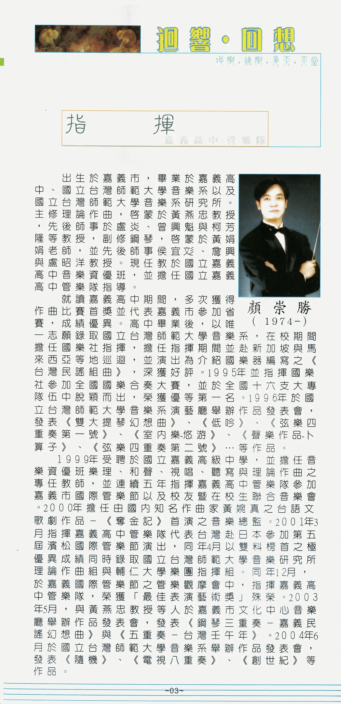
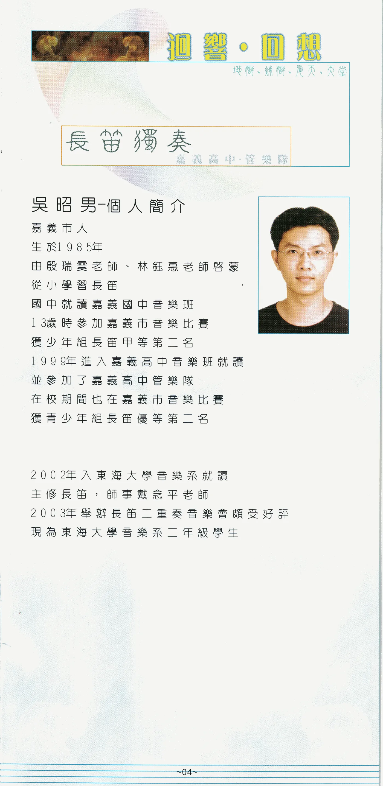
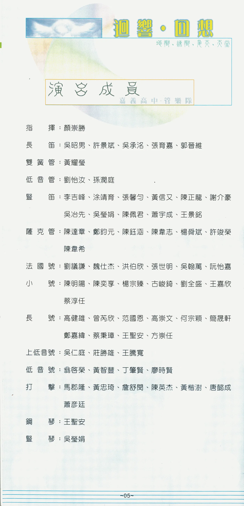
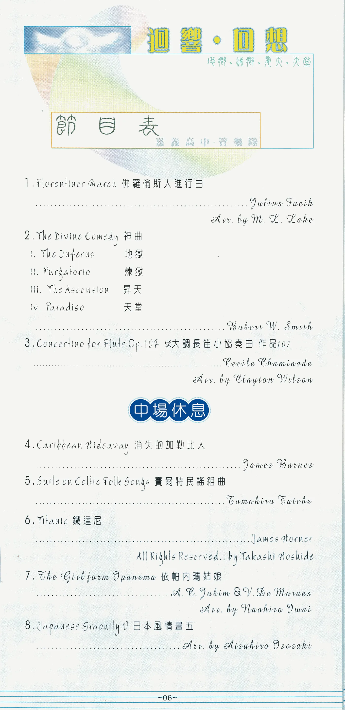
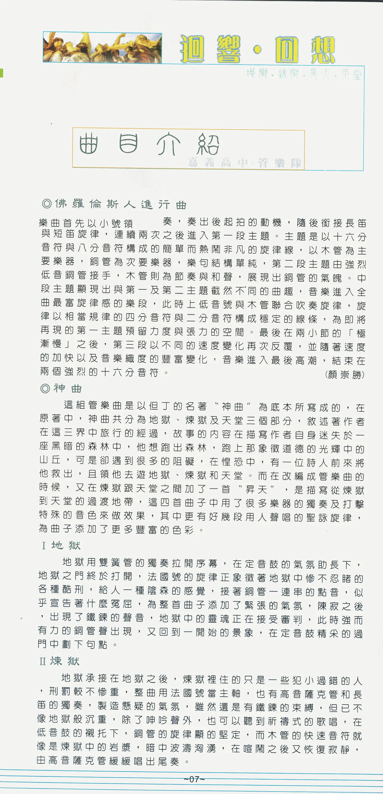
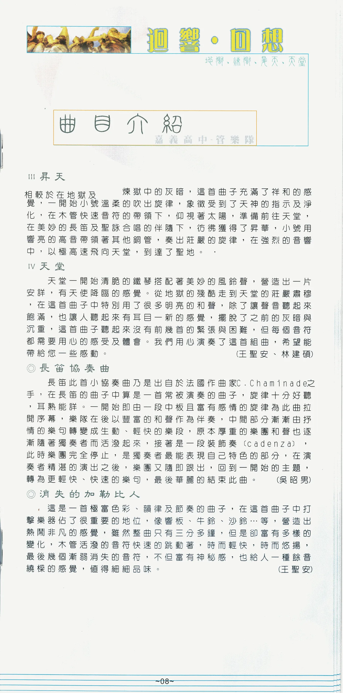
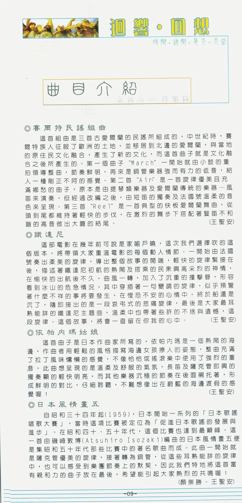
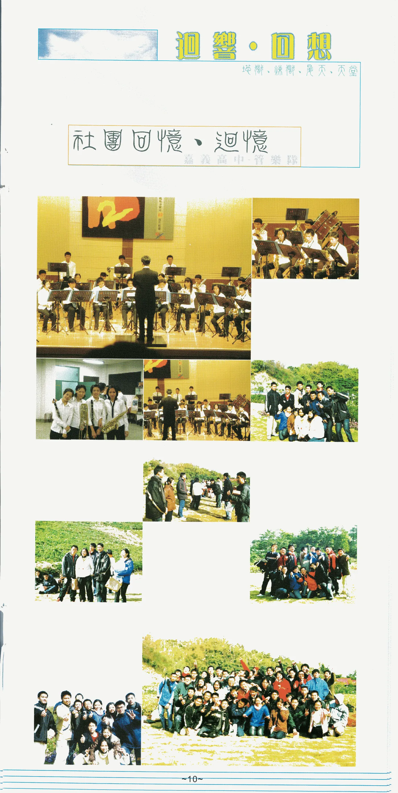
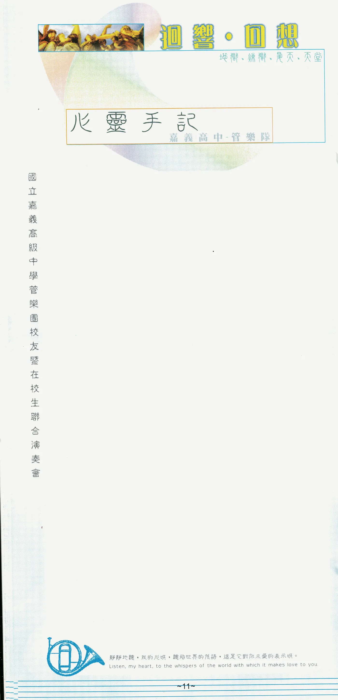
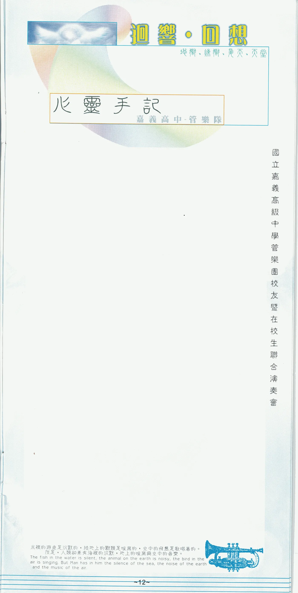
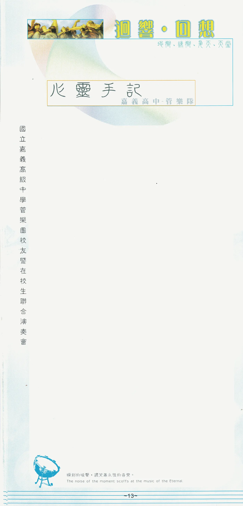
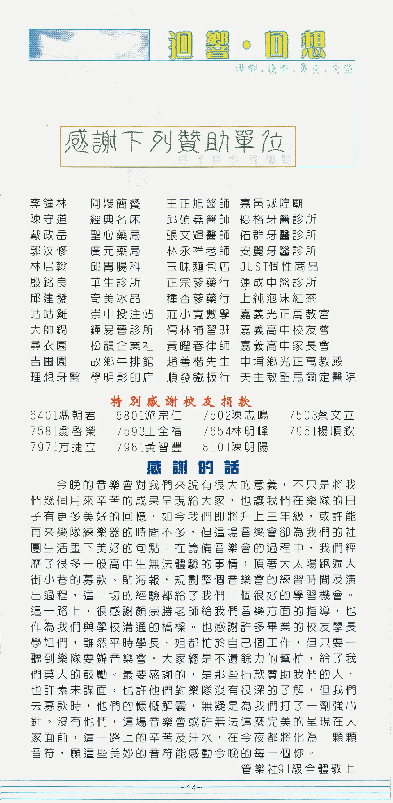
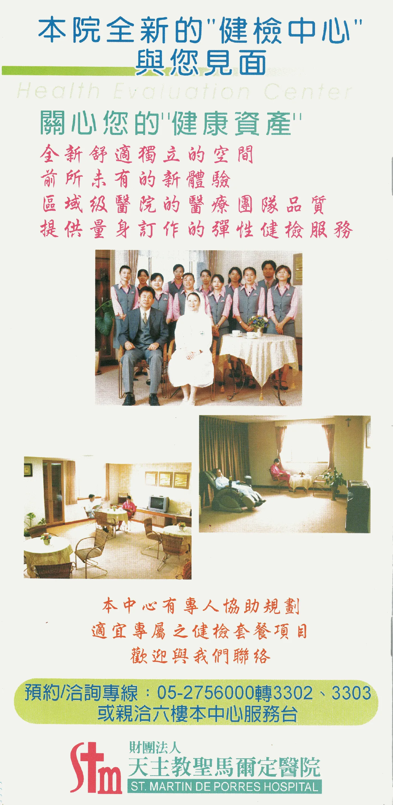
網站補充資訊
以上校長序文、團隊簡介、人物介紹、曲目與解說、演出成員、贊助與致謝，均按 2004 年紙本節目冊原文轉錄；僅移除紙本分行並調整網站顯示空格，未以今日狀態改寫。
節目冊節目表原印「The Girl form Ipanema」及「Japanese Graphity V」，網站依原印文字保留；一般通行曲名分別為「The Girl from Ipanema」及「Japanese Graffiti V」。
〈神曲〉的〈煉獄〉解說首句原印「地獄承接在地獄之後」，網站忠實保留，不逕行改寫。
〈演出的話〉稱台南場地為「新營文化中心」，封面則印作「台南縣立文化中心音樂廳」；網站分別保留兩處原文。
校友捐款名單原已列校友編號；演出成員名單則依網站校友名錄補入唯一可確認之編號，未能唯一確認者不推測。